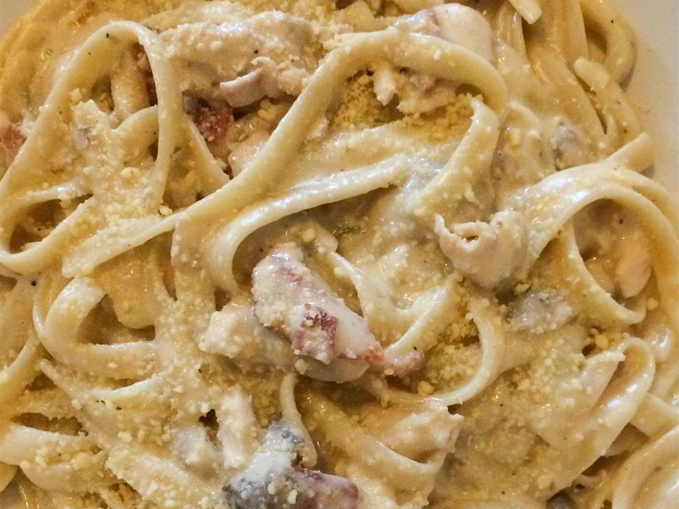

Chicken Alfredo

Preparation Time: 25 minutes
Difficulty: Easy
Ingredients
- 200g fettuccine
- 200g chicken
- 2 tbsp butter
- 3–4 garlic cloves (minced)
- 1 cup cream
- ½ cup parmesan
- Salt
- Pepper
Instructions
- Cook chicken with salt & pepper.
- Prepare Alfredo sauce (same as veg).
- Add pasta + sliced chicken.
- Mix pasta and serve.